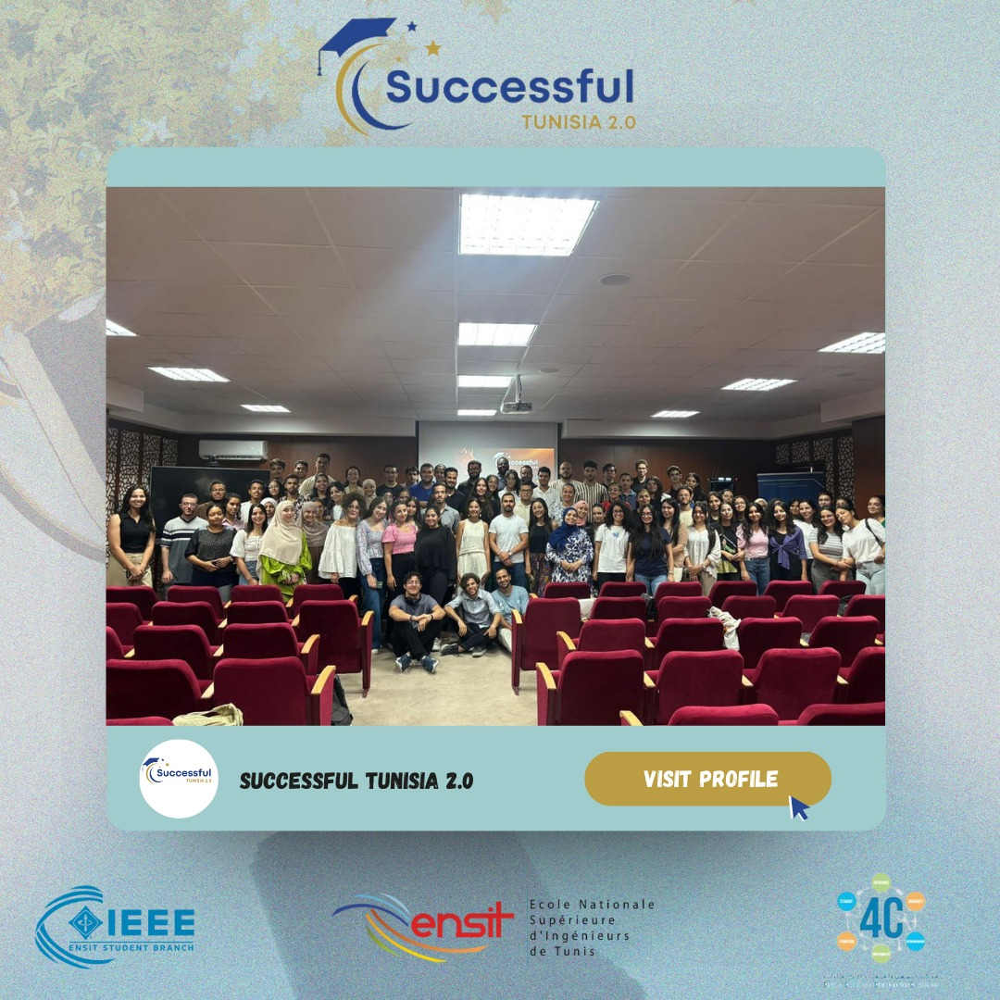

Date: 21/09/2024
A heartfelt thank you to each and every attendee who made our 'Successful Tunisia 2.0' event such a resounding success!Your enthusiasm, engagement, and commitment to celebrating the success of our fellow Tunisians truly made this event special. We are incredibly grateful to all of our speakers who shared their inspiring stories and valuable insights. Your journeys are a testament to the power of perseverance, innovation, and community.
Chadha Bouthouri:
Software engineer at InstaDeep
Akram Dhanoun:
Final-year engineering student and co-founder of Aether Robotics
Rym Ben Chaabene:
Artificial intelligence engineer at Quantmetry and ENSIT alumna
Karim Zaoui:
Senior IT project manager at BNP PARIBAS
Lassaad Ouechtati:
Cloud architect and AWS Hero at Quantrium
Amira Bouzir:
Embedded systems engineer at Groupe CRIT and ENSIT alumna
Bilel Nefzi:
CISO of the year 2023 finalist, AI and cybersecurity expert at Access
Last but not least, thank you to all of our volunteers whose hard work and dedication ensured the smooth running of the event.